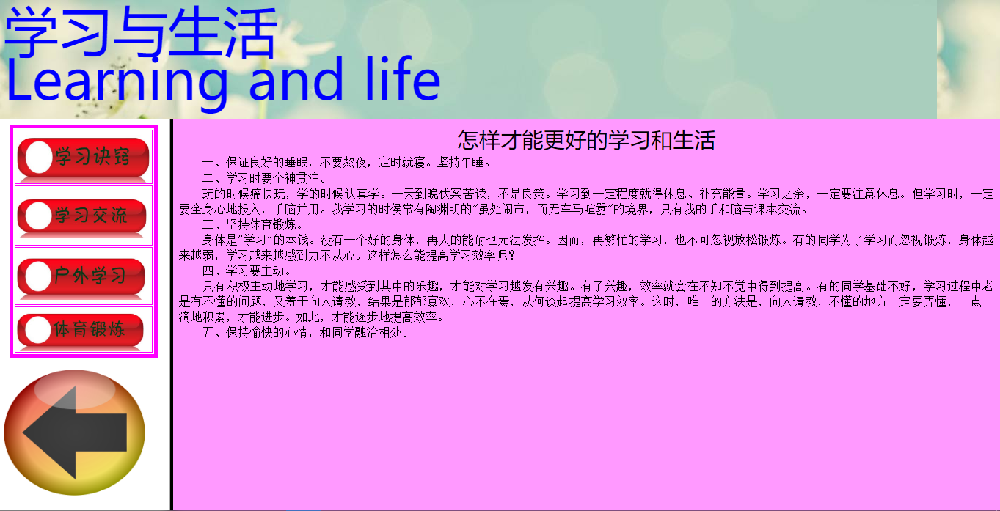

优秀成员作品
作者：陆同学
创作思想：我有一个很好的朋友，我觉得友谊是每个人心中最重要的东西，在我拥有深厚友谊的时候，我想让更多的人得到这种友谊，守护好友谊，所以我创作了这个网站。
创作过程：技术：运用了表格网页进行图片文字的排版，使用滚动字幕、超链接、锚链接。利用表单创作了交互网页，最后设计了框架网页，并有超链接。得意之处：制作多个网页、本网页之间相互切换，并且背景与文字相得益彰
制作软件：Dreamweaver，运行环境：Windows XP
作者：刘同学
创作思想：经历过小学六年的学生，进入初中已经学习了一个学期，关于学习，我有一些想法想与大家分享，让大家跟我一样懂得学习、快乐学习。
创作过程：技术：表格网页、交互网叶、超链接、框架链接。得意之处：制作多个网页之间相互切换，并且背景与文字相得益彰。
制作软件：Dreamweaver，运行环境：Windows XP